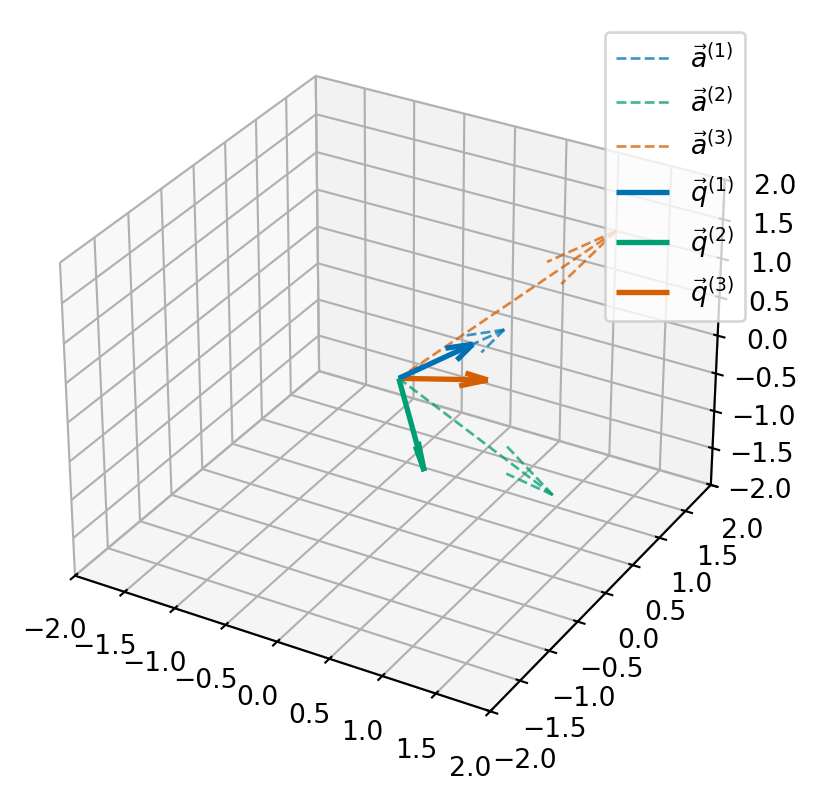

Module learning outcome: apply algorithms to compute eigenvectors and eigenvalues of large matrices.
Chapter 8
The problem
Finding numbers \(\lambda\) (eigenvalues) and vectors \(\vec{x}\) (eigenvectors) which satisfy the equation: \[\begin{equation}
A \vec{x} = \lambda \vec{x}.
\end{equation}\]
Grand strategy
To find eigenvalues and eigenvectors of \(A\), our “grand strategy” is to find a sequence of matrices \(P_1, P_2, \ldots\) to form a sequence of matrices: \[\begin{gather*}
A \\
P_1^{-1} A P \\
P_2^{-1} P_1^{-1} A P_1 P_2 \\
P_3^{-1} P_2^{-1} P_1^{-1} A P_1 P_2 P_3 \\
\ldots
\end{gather*}\] We aim to get all the way to a simple matrix where we read off the eigenvalues and eigenvectors.
Example
For example, if at level \(m\), say, we have transformed \(A\) into an upper triangular matrix the eigenvalues are the diagonal of the matrix \[\begin{equation*}
P_m^{-1} P_{m-1}^{-1} \cdots P_2^{-1} P_1^{-1} A P_1 P_2 \cdots P_{m-1} P_m,
\end{equation*}\] and the eigenvectors are the columns of the matrix \[\begin{equation*}
S_m = P_1 P_2 \cdots P_{m-1} P_m.
\end{equation*}\]
Orthogonal matrices
In the example below, and many others, we see that we typically want the matrices \(P_j\) to be orthogonal or orthonormal.
A (real-valued) matrix \(Q\) is orthogonal if \(Q^T Q\) is diagonal and a (real-valued) matrix \(Q\) is orthonormal if \(Q^T Q = I_n\).
Orthogonal matrices - column view
In other words, if denote by \(\vec{q}^{(1)}, \ldots, \vec{q}^{(n)}\) the columns of \(Q\), then \(Q\) is orthogonal if \[\begin{equation*}
\vec{q}^{(i)} \cdot \vec{q}^{(j)} = 0 \quad \text{ if } i \neq j,
\end{equation*}\] and \(Q\) is orthonormal if \[\begin{equation*}
\vec{q}^{(i)} \cdot \vec{q}^{(j)} =
\begin{cases}
0 & \text{ if } i \neq j \\
1 & \text{ if } i = j.
\end{cases}
\end{equation*}\]
Example
Show that the rotation matrix \(R(\theta)\) is orthonormal. \[
R(\theta) =
\begin{pmatrix}
\cos \theta & - \sin \theta \\
\sin \theta & \cos \theta
\end{pmatrix}.
\]
QR algorithm
The QR algorithm is an iterative method for computing eigenvalues and eigenvectors.
At each step a matrix is factored into a product in a similar fashion to LU factorisation.
In this case, we factor a matrix, \(A\) into a product of an orthonormal matrix, \(Q\), and an upper triangular matrix, \(R\): \[
A = Q R.
\] This is QR factorisation.
The algorithm
Given a matrix \(A\), the algorithm repeatedly applies QR factorisation. First, we set \(A^{(0)} = A\), then we successively perform for \(k=0, 1, 2, \ldots\):
Compute the QR factorisation of \(A^{(k)}\) into an orthonormal part and upper triangular part \[
A^{(k)} = Q^{(k)} R^{(k)};
\]
Update the matrix \(A^{(k+1)}\) recombining \(Q\) and \(R\) in the reverse order: \[
A^{(k+1)} = R^{(k)} Q^{(k)}.
\]
How does it work?
Rearranging the first step within each iteration, we see that \[
R^{(k)} = (Q^{(k)})^{-1} A^{(k)} = (Q^{(k)})^T A^{(k)}.
\] Substituting this value of \(R^{(k)}\) into the second step gives \[
A^{(k+1)} = (Q^{(k)})^{-1} A^{(k)} Q^{(k)},
\] and we see that at each step we are finding a sequence of similar matrices, all with the same eigenvalues.
How does it work? ii
We can additionally find the eigenvectors of \(A\) by forming the product \[
Q = Q^{(1)} Q^{(2)} \cdots Q^{(m)}.
\]
Verify the orthonormality conditions for \(\vec{q}^{(1)}, \vec{q}^{(2)}\) and \(\vec{q}^{(3)}\).

How does this help?
We can consider the matrix \(Q\) whose columns are the vectors \(\vec{q}^{(j)}\) and the matrix \(A\) whose columns are the vectors \(\vec{a}^{(j)}\): \[\begin{equation*}
Q = \begin{pmatrix}
&& \\
\vec{q}^{(1)} & \vec{q}^{(2)} & \vec{q}^{(3)} \\
&&
\end{pmatrix}
\quad \text{and} \quad
A = \begin{pmatrix}
&& \\
\vec{a}^{(1)} & \vec{a}^{(2)} & \vec{a}^{(3)} \\
&&
\end{pmatrix}
\end{equation*}\] Then we can compute that \[\begin{align*}
(Q^T A)_{ij} = \vec{q}^{(j)} \cdot \vec{a}^{(j)}.
\end{align*}\]
Exercise
Continue the QR-factorisation process by computing \(B = R Q\) and apply the Gram-Schmidt process to the columns of \(B\).
Remark
The Gram-Schmidt algorithm relies on the fact that after each projection there should be something left - i.e. \(\vec{u}^{(j)}\) should be non-zero.
If \(\vec{a}^{(j)}\) is in the span of \(\{ \vec{q}^{(1)}, \ldots, \vec{q}^{(j-1)}
\}\), then the projection onto \(\vec{u}^{(j)}\) will give \(\vec{0}\).
There are a few ways to test this, but the key idea is that if \(A\) is non-singular then we will always have \(\vec{u}^{(j)} \neq \vec{0}\) – at least in exact-precision calculations…
Python QR factorisation using Gram-Schmidt
Let’s try it out!
Let’s test it without our example above:
Finding eigenvalues and eigenvectors
The algorithm given above says that we use the QR factorisation to iteratively find a sequence of matrices \(A^{(j)}\) which should converge to an upper-triangular matrix.
Let’s try it out
We test this out in code first for the matrix from a previous example:
Correctness and convergence
Let’s see what happens when we try this same approach for a bigger symmetric matrices. Here we have a test that samples ten different random matrices and computes the average number of iterations, average run time and maximum error in the eigenvalue equation.